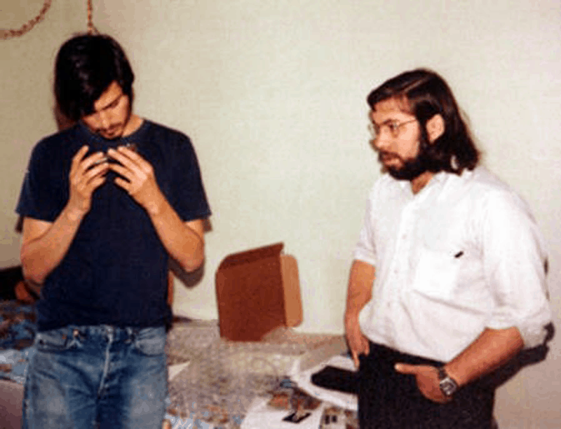

Steve Wozniak
(1950 - Present)

❝I just believe that the way that young people's minds develop is fascinating. If you are doing something for a grade or salary or a reward, it doesn't have as much meaning as creating something for yourself and your own life.❞ - Steve Wozniak
Contributions:
-
Steve Wozniak created
blue boxes these boxes enabled him and his friends to make long distances calls for free.
-
He developed the Apple I and co-developed the Apple II
 .
.
- He made personal computers more accessible and lead the personal computer revolution.
-
Steve redesigned the Atari Breakout machine's circuit board with 50 less chips. This was a huge deal.
-
Steve founded CL 9 and created the first programmable universal remote.
-
Later on, he started teaching children in schools, up to grade 12.
Personal Life
-
Steve Wozniak was born and grew up in San Jose, California.
-
He now resides in Los Gatos, California.
-
He wants to live in Melbourne, Australia and has applied for a citizenship there
-
He nickname is "Woz".
-
He doesn't like money "because it could corrupt your values".
-
Because of his despisement of money, he offered early Apple employees $10 million in stock.
-
Steve says he is an atheist or agnostic.
-
He has 3 children.
-
He has beene expelled from the University of Colorado Boulder for hacking into their computers.
-
He earned his bachelors degree in computer science and engineering at the University of California, Berkeley.